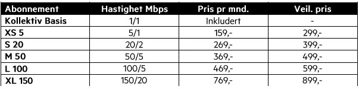

Praktisk informasjon
Tv og internett
Vi har per dags dato en avtale med Get. Felles utgiftene inkluderer TV start og Bredbånd basis (1Mbit i bunn).
TV start er Get sin vanlige basispakke med 20 faste og 20 kanaler som hver og en kan velge ut fra totalt ca 80 kanaler.
Det mulig å oppgradere internett hastigheten på individuell basis, Prisene er som følger:
